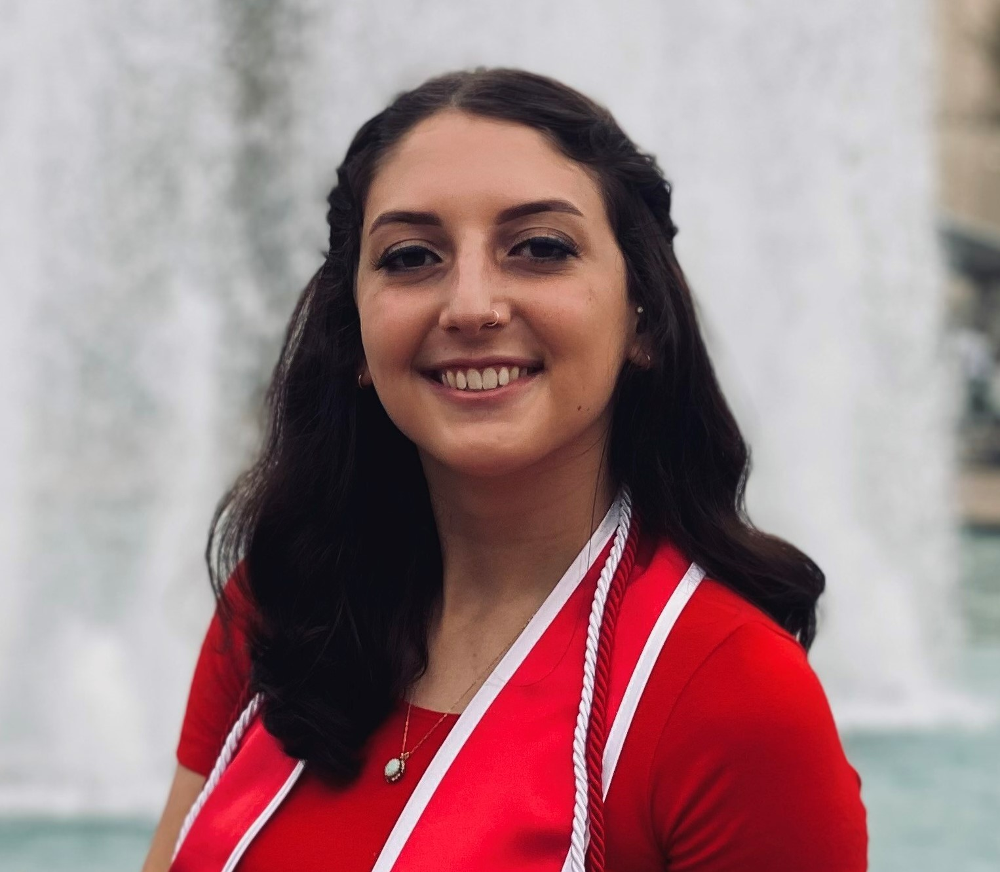

Sarah Walters Resume

Education
- University of Houston (2018-2021)
- Bachelor of Arts, Music
- Minor, Business Administration
- Overall GPA: 3.4
Work Experience
Manager Assistant - Bain & Co
August 2022 - Present
- Support and manage 4-6 Senior Managers, Associate Partners, or equivalent’s, complex calendars, travel, expenses, and meeting logistics.
- Serve as a liaison between my consultant’s team and their client, coordinating complex calls with aggressive guidelines.
Store Operations & Management Intern / PM - H.E.B
May 2021 - August 2021
- Project manager for an internal emergency response project.
- Worked in store and set up my own personal project to help guide a challenged curbside department. Successfully determined training solutions for partners to accelerate long term productivity.
Operations, Personnel & Events Intern - Texas Music Festival
April 2019 - July 2019
- Ensured all logistical workings behind a music festival ran efficiently.
- High emphasis on team work to execute daily operations that aligned with the goals of the organization.